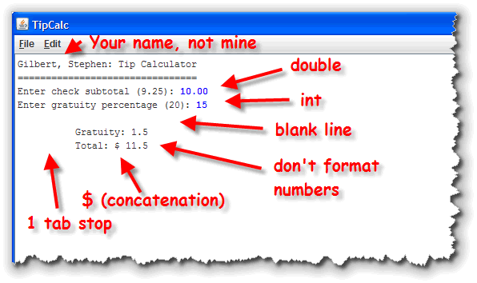
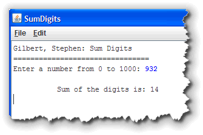

The exercises this week are a little more involved than last week, but if you follow the lectures and complete the in-class lab material, you shouldn't have any problem. The homework assignments will take a couple of hours to complete, so don't leave them until the last minute.
On the class links page I've placed links to several PDF "How To" documents that you'll probably find helpful for completing these assignments. You'll find them in the section titled How do I? Help Documents for CS 170. There you'll find step-by-step instructions for installing and configuring Eclipse, Starting Eclipse, Creating an ACM ConsoleProgram and submitting your assignments to Web-CAT.
-
Homework 03:
Write a complete Java ACM ConsoleProgram in a class named
Difference that prints the following output:
What is the difference between
a ' and a "? Or between a " and a \"?
One is what we see when we're typing our program.
The other is what appears on the "console."Format your code using the rules covered in lecture, as well as those found in the CS 170 style guide. Your program will be graded 10% on style. Submit only Difference.java to Web-Cat before the deadline. (5 points)
Solution -
Homework 04:
Write a complete Java ACM ConsoleProgram in a
class named Spikey that prints the following output:
\/
\\//
\\\///
///\\\
//\\
/\Format your code using the rules covered in lecture, as well as those found in the CS 170 style guide. Your program will be graded 10% on style. Submit only Spikey.java to Web-Cat before the deadline. (5 points)
Solution -
Homework 05:
In Eclipse, create a new class named SayWhat. Open it
in the Eclipse editor and erase all of the code it contains.
Then, copy and paste the code from the starter file
SayWhat.java into your Eclipse file. Save it
after you have copied the text.
The SayWhat program is completely legal under Java's
syntax rules. Compile it and run the program to prove
to yourself that it contains no errors.
Now, look at the code itself. Pretty unreadable, huh? It doesn't come close to follwoing the style guidelines for writing well-formatted code. Reformat the code using the rules we discussed in lecture and those found in the CS 170 Style Guide, (which you can download from the class discussion Files area). Make sure you add a JavaDoc comment to the top of your file that includes the @author and @version tags as well as a JavaDoc comment for the main() method. You can find the exact format in the Style Guide.
Submit your program to Web-Cat before the deadline. This program will be graded entirely style and formatting. When you submit your program, click the hyperlink (shown below) to see more on each style faux-pas caught by Web-Cat. You can submit this assignment up to 5 times. (5 points)
Solution -
Homework 06:
Write a complete Java ACM ConsoleProgram in a
class named TipCalc that reads the subtotal and
gratuity rate and then computes the gratuity and total bill.
Here's what a sample interaction should look like along
with some notes about the program's requirements:

Format your code using the rules covered in lecture, as well as those found in the CS 170 style guide. Your program will be graded 10% on style. Submit only TipCalc.java to Web-Cat before the deadline. (5 points)
Solution -
Homework 07:
Write a complete Java ACM ConsoleProgram in a
class named SumDigits that reads an integer
between 0 and 1,000 from the keyboard and then sums all
of the individual digits in the number.

To the right is a sample interaction so you can see what the program should look like as it runs.To calculate the digits you'll have to do several divisions and integer remainder (%) operations. Notice that for any integer,
n % 10returns the value of the right-most digit, andn / 10returns a new number with the right-most digit discarded.Format your code using the rules covered in lecture, as well as those found in the CS 170 style guide. Your program will be graded 10% on style. Submit only SumDigits.java to Web-Cat before the deadline. (5 points)
Solution - Read the first section in Chapter 2 and Chapter 4. Complete the Unit 2 Quiz online before the deadline.
Remember that all of these assignments are due before the deadline, so make sure you don't get "caught short".